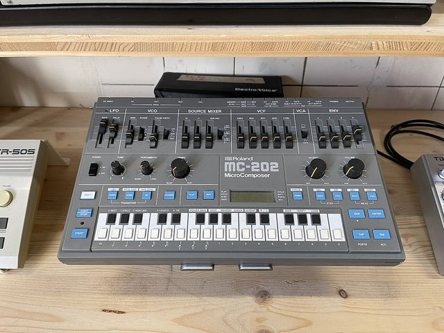

Scheda 068 · 1983 · Giappone
Roland MC-202 MicroComposer
Il fratello della TB-303 col sequencer dentro. Va a pile, e le note si scrivono coi numeri
Un synth monofonico, 2 piste di sequencer e l'uscita per la cuffia, in una scatola grigia di 34 centimetri per 20.
Il suono vero · 0:45
Un Roland MC-202 vero che suona un giro dal suo sequencer, col filtro e le manopole del pannello, senza effetti aggiunti.
0:00 / 0:45
Registrazione di Sven Buresch (Audioschotter.net) · Pubblico dominio · Wikimedia Commons · estratto di 45 s, volume normalizzato
- USCITA
- 1983
- PREZZO
- 365 £
- MEMORIA
- 2.729 note
- PILE
- 6 da 1,5 V
La macchinaChe cos'è
A vederlo sembra un SH-101 a cui hanno tolto la tastiera. Al suo posto ci sono 2 ottave e mezza di tastini di plastica, e sotto quelli bianchi sono stampati i numeri da 0 a 9. Sopra c'è uno schermo a cristalli liquidi che mostra numeri e basta. Le note in memoria sono 2.729, divise fra 2 piste. Si salvano su una cassetta qualsiasi, e se non lo fate le perdete. Va a 6 pile da 1,5 volt o con l'alimentatore. In Inghilterra, nel 1983, costava 365 sterline. A me è sempre sembrato più bello da guardare che comodo da usare, e credo sia per questo che tanti ci si affezionano.
Chi l'ha costruitaRalph Dyck, e Roland
Un progettista con nome e cognome l'MC-202 non ce l'ha. Ha un nonno. Nei primi anni '70 Ralph Dyck, musicista canadese, si costruisce in casa un sequencer digitale a un canale solo, e le note le batte su un tastierino da calcolatrice. A Roland l'idea piace. Nel 1977 esce l'MC-8 MicroComposer, 8 canali e 16 KB di memoria, e ne vendono circa 200 in tutto il mondo. Sul prezzo le fonti non concordano. Sound On Sound nel 1997 scrive 4.795 dollari, nel 2004 «circa 8.000». Sei anni dopo l'MC-202 si porta dietro la stessa idea, le note scritte in numeri, in una scatola da mettere in borsa.
Come funzionaCosa c'è dentro
Il synth è quello dell'SH-101 senza il generatore di rumore e con in più un ritardo sull'LFO. Un oscillatore con dente di sega, impulso e sub, un filtro passa-basso a 24 dB, un inviluppo. La parte strana è il sequencer. Le note si possono suonare col metronomo, ma il modo vero è scriverle in tre passate. Prima le altezze, una dopo l'altra. Poi quanto dura ogni passo, poi quanto resta aperta la nota. Ogni nota può avere l'accento e il portamento, come sulla TB-303, e una delle 2 piste può suonare un altro synth dalle prese CV e gate. Provate a scrivere un giro così e vi accorgerete che state pensando in numeri.
Chi l'ha usataNei dischi
- Alessandro Cortini«Sonno» (2014): un album intero con un MC-202 e un pedale di delay
- AutechreSean Booth, 2004: il sequencer è «matto, tutto al contrario», e geniale quando capisci i numeri
- John Frusciantene ha 6, e per lui è «uno dei miei strumenti preferiti» (2014)
- Daft Punknella lista delle macchine di «Homework» (1997)
Da ascoltare
Alessandro Cortini, «Voltaggio Solitario» (2014)
Un synth che suona una nota alla volta e un pedale di delay. Ascoltatelo sapendo che non c'è nient'altro.
L'aneddotoUna storia
Alessandro Cortini è nato a Bologna e da anni suona le macchine dal vivo coi Nine Inch Nails. Nel 2014 pubblica «Sonno» con Hospital Productions, 9 pezzi registrati in camere d'albergo con un MC-202 che passa in un pedale di delay. Il suono va dritto nel registratore, a volte esce da una piccola cassa portatile. Cortini racconta che girava per la stanza col registratore in mano, per sentire dove la sequenza suonava meglio. Apriva i rubinetti, le porte, le finestre, e stava a sentire come quei rumori si mescolavano al 202. L'anno dopo esce «Risveglio», con una TB-303 sincronizzata allo stesso MC-202.
Avvertenze
Spegnendo si perdono tutte le 2.729 note. Prima la cassetta, oppure POWER SAVE, che tiene viva la memoria e spegne il synth.
Il reel
La versione corta
Le cose da sapere in fila, una schermata alla volta, col suono della macchina quando ne esiste una registrazione libera. Aprilo su Instagram ↗
Il carosello
Le 6 tavole


Da dove viene
Fonti
- «Roland MC-202» — Wikipedia (EN) verificata il 2026-10-20
- «The MC-202 MicroComposer» — E&MM, 1983 verificata il 2026-10-20
- «Roland MC202 Microcomposer» — One Two Testing, 1983 verificata il 2026-10-20
- «Roland MC202» — Sound On Sound, 1995 verificata il 2026-10-20
- «Roland MC8» — Sound On Sound, 1997 verificata il 2026-10-20
- «Roland MC-8 Microcomposer» — Wikipedia (EN) verificata il 2026-10-20
- «Autechre» — Sound On Sound, 2004 verificata il 2026-10-20
- «Sonno» di Alessandro Cortini — Resident Advisor, 2014 verificata il 2026-10-20
- «John Frusciante: War and Peace» — Premier Guitar, 2014 verificata il 2026-10-20
- La lista delle macchine di «Homework» — MusicTech, 2021 verificata il 2026-10-20
Foto: 1904.CC · CC BY 4.0 · Wikimedia Commons
Foto nelle tavole: Brandon Daniel · CC BY-SA 2.0 · Wikimedia Commons
Suono: Registrazione di Sven Buresch (Audioschotter.net) · Pubblico dominio · Wikimedia Commons · estratto di 45 s, volume normalizzato